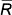

| = |
Samples instead of individual values
Although control charts for individual values are sometimes used, it is more common to examine samples from a process at regular intervals rather than individual values. There are a few reasons:
Control chart for means
We first consider detection of whether the mean output level of a process is changing, based on a run chart of the means of successive samples. Sample means of n values vary less from sample to sample than individual values, and have standard deviation
| = |
If we knew the mean, µ, and the standard deviation, σ, of the process when it is under control, the appropritate control limits would therefore be:

These control limits should be distinguished carefully from the corresponding control limits that would be used for individual values,
Since the control limits used in a control chart for means are closer to µ than those in a control chart for individual values, the chart is more sensitive to changes in the process mean over time.
Training data
Although the above control limits describe well the idea of a control chart for sample means, in practice we know the values of neither µ nor σ. The control limits must therefore be estimated from training samples in which great care is taken to avoid special causes — i.e. samples that are collected when the process is in control.
It would be reasonable to simply use the mean and standard deviation of the training data as estimates of µ or σ in the above control limits. However in practice, the control limits are usually based on the mean and range of the k training samples as follows:
In these formulae, is the average of the k training sample means, and  is average of their ranges,
The final value in the formulae for the control limits is a constant, A2, that depends on the number of observations in each sample, n.
Note that A2 depends on n, not the number of training samples, k.
The table below gives the value A2 for small sample sizes up to n = 10.
| Sample size, n | A2 |
|---|---|
| 2 | 1.880 |
| 3 | 1.023 |
| 4 | 0.729 |
| 5 | 0.577 |
| 6 | 0.483 |
| 7 | 0.419 |
| 8 | 0.373 |
| 9 | 0.337 |
| 10 | 0.308 |
Paint primer thickness
The diagram below shows thickness of paint primer in mils (an imperial measurement equal to one thousandth of an inch), measured from a sample of 10 items each morning and afternoon for 5 successive mornings and afternoons. We will regard these data as a training set from which we obtain control limits for later samples of primer thickness.
(In practice, there are usually more training samples, but we use a small real data set for illustration.)
The control limits that are initially shown are those for a run chart of individual values — mean ± 3 standard deviations for the 50 values in the training data.
Use the scroll bar to display the samples that were measured over the next 15 half-days. No values are outside the 3-standard deviations limits, so we would conclude that the process is in control.
Now click the checkbox Show Means. The raw values in the samples are dimmed and the sample means are displayed, joined by blue lines. The sample means are considerably less variable than the raw values, so the control limits are redrawn closer to the centre line. The calculations for the upper and lower control limits are shown below.
Based on the means, we again conclude that there is no evidence of a shift in the process mean.
As in control charts for individual values, additional triggers can be used that depend on several successive means. These are defined in the same way as those in control charts for individual values. For example, six successive sample means either increasing or decreasing suggest that there might be a special cause.